4 Functional Data Analysis
Note that this chapter is not relevant for the exam!
Literature and software
Main reference for this chapter:
- Introduction to Functional Data Analysis (Kokoszka and Reimherr (2017))
Further textbooks:
- Functional Data Analysis (Ramsay and Silverman (2005))
- Nonparametric Functional Data Analysis: Theory and Practice (Ferraty and Vieu (2006))
- Theoretical Foundations of Functional Data Analysis, with an Introduction to Linear Operators (Hsing and Eubank (2015))
R package used in this chapter:
## Install the fda package
install.packages("fda")
## Load the package
library("fda")
## Load data contained in the package
data(growth)
data(CanadianWeather)In the previous chapter, we used basis expansions to recover latent regression curves from discrete observations. When several such curves are observed—for example, for different people, firms, countries, days, or repeated experiments—we can perform statistics on the curves themselves. The field that studies such data is called functional data analysis (FDA).
The word functional does not merely mean that a very long vector is stored in a computer. It expresses a substantive assumption: the coordinates are evaluations of one underlying object, and the ordering of the coordinates carries information. Values observed at nearby ages, maturities, wavelengths, or times are related because they belong to the same curve.
This chapter develops that distinction carefully. In particular, we will compare unstructured high-dimensional variation} with high-dimensional observations generated by smooth functions.
The distinction explains why a dense observation grid is often helpful in FDA, while an increasing number of unrelated variables is difficult in ordinary high-dimensional statistics.
Functional data examples
Growth data, such as those shown in Figure 4.1, inspired some of the first work in FDA. The trajectories are smooth, and their derivatives have a direct interpretation as growth velocities.
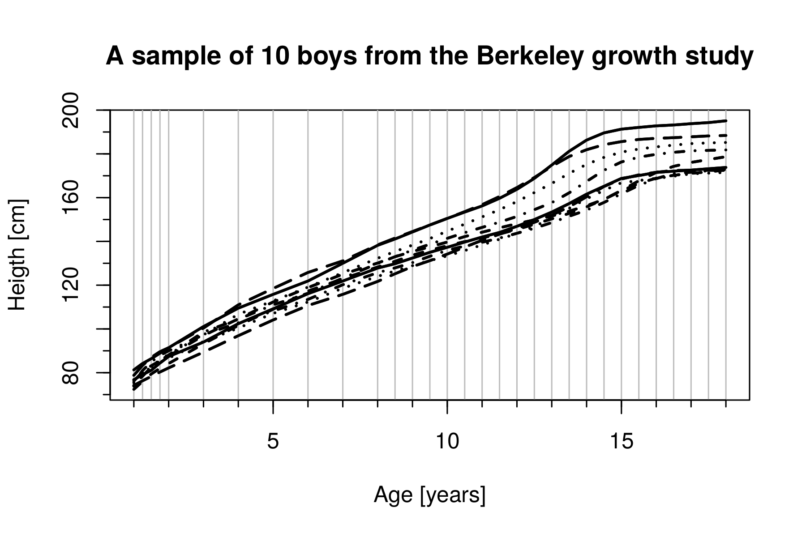
Modern FDA also considers rough sample paths: curves may be continuous without being differentiable. Figure 4.2 shows data from a psychological case study.
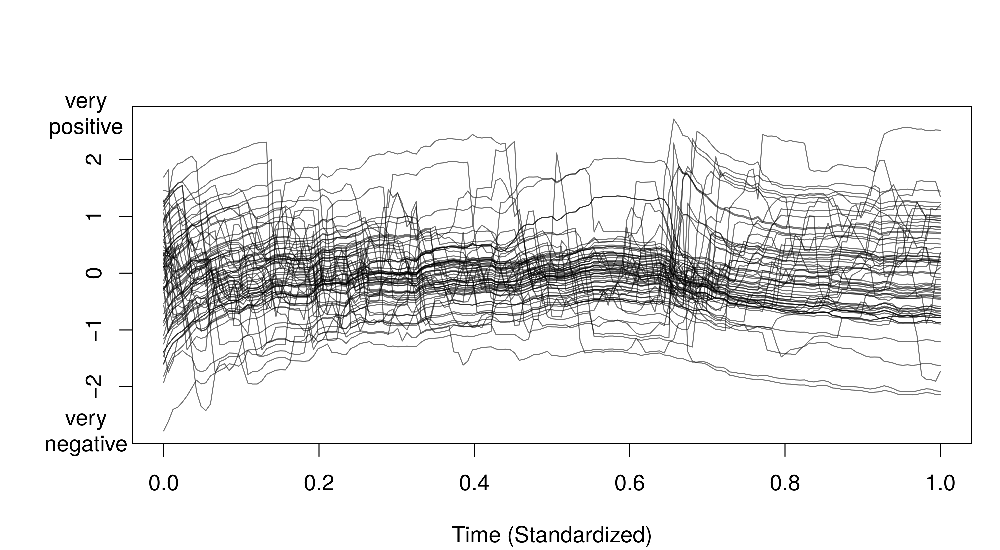
Functional time-series data are often constructed by dividing a long time series into regular sections, such as days. Functional methods have been used to model and forecast daily electricity prices and to use daily demand curves as predictors.
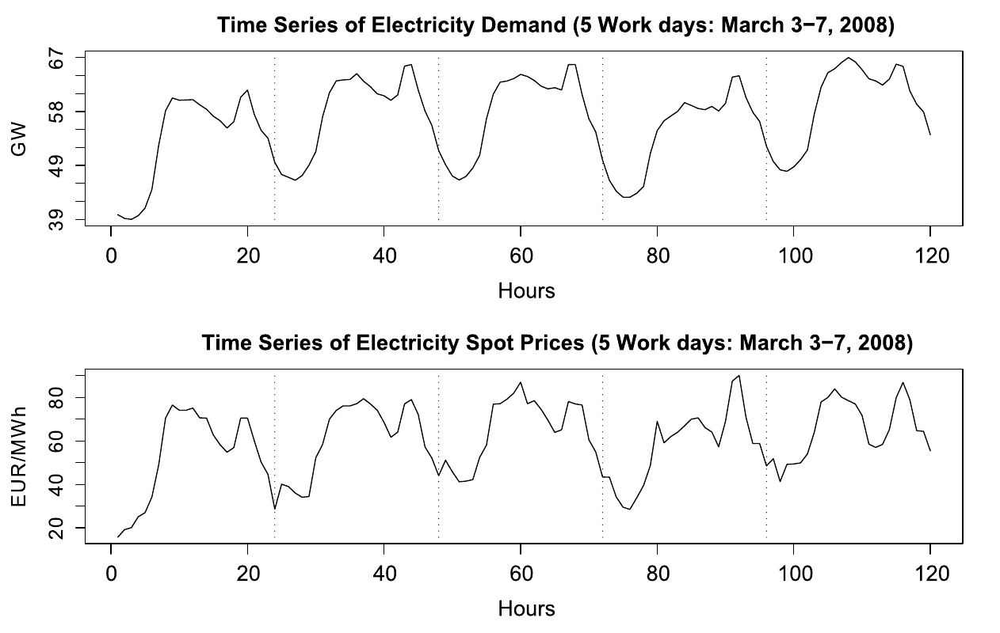
A further example is a sequence of daily pollution curves.
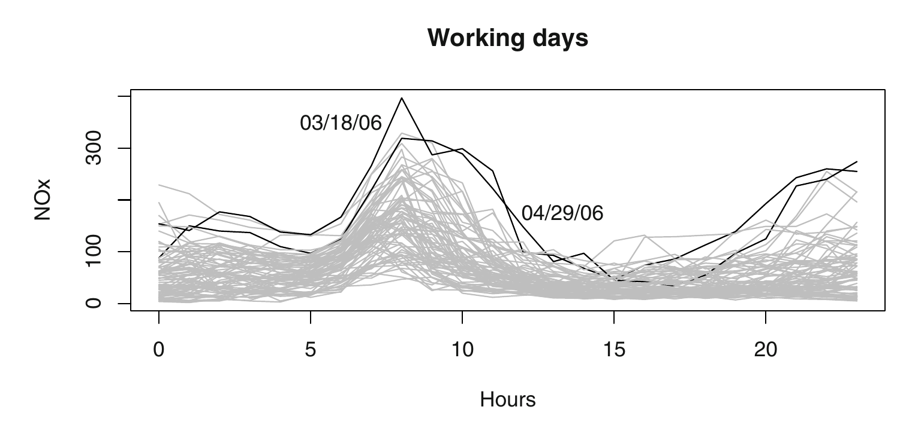
4.1 From raw observations to random functions
A common raw dataset has the form
\[ X_i(t_j), \qquad i=1,\ldots,N, \qquad j=1,\ldots,J, \]
where \(N\) is the number of independently observed units and \(J\) is the number of measurements per unit.
We deliberately use two different letters:
\[ N: \quad \text{number of independent curves}, \]
\[ J: \quad \text{number of grid points on each curve}. \]
This distinction will remain important throughout the chapter. Increasing \(N\) gives more information about the population of curves. Increasing \(J\) gives a more detailed view of each already-observed curve.
The theoretical objects of interest are entire functions,
\[ X_i(t), \qquad t\in[a,b], \qquad i=1,\ldots,N. \]
op <- par(mfrow=c(1,2), mar=c(5.1, 4.1, 2.1, 2.1))
matplot(
x = growth$age,
y = growth$hgtf[, 1:5],
type = "p",
pch = 21,
xlab = "Age",
ylab = "Height (cm)",
cex.lab = 1.2,
col = 1:5,
bg = 1:5,
main = expression(X[i](t[j]))
)
matplot(
x = growth$age,
y = growth$hgtf[, 1:5],
type = "l",
lty = 1,
xlab = "Age",
ylab = "Height (cm)",
cex.lab = 1.2,
main = expression(X[i](t))
)
par(op)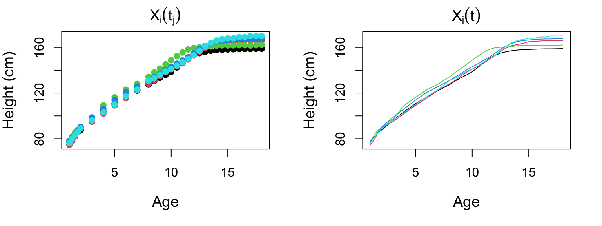
A random function is therefore a random variable whose realization is an entire curve rather than a single number. We will not need abstract functional analysis to work with this idea. We only need to specify how distances between curves are measured.
4.2 Why a dense grid is not automatically a high-dimensional problem
4.2.1 The function norm averages over the domain
On \([0,1]\), a natural measure of the size of a curve \(g\) is
\[ \|g\|_{L^2}^2 = \int_0^1 g(t)^2\,dt. \]
Two curves are close when their integrated squared difference is small:
\[ \|g-h\|_{L^2}^2 = \int_0^1 \{g(t)-h(t)\}^2\,dt. \]
Suppose that the curve is recorded on the regular grid
\[ t_j=\frac{j}{J}, \qquad j=1,\ldots,J. \]
The integral is approximated by a Riemann sum,
\[ \|g\|_{L^2}^2 \approx \frac{1}{J}\sum_{j=1}^J g(t_j)^2. \]
It is therefore natural to define the discrete function norm
\[ \|\boldsymbol g\|_J^2 = \frac{1}{J}\sum_{j=1}^J g(t_j)^2. \]
By contrast, the ordinary Euclidean norm of the stored vector is
\[ \|\boldsymbol g\|_{\mathbb R^J}^2 = \sum_{j=1}^J g(t_j)^2 = J\|\boldsymbol g\|_J^2. \]
For a fixed nonzero curve, the ordinary Euclidean norm grows approximately like \(\sqrt{J}\), simply because it adds more terms. The function norm remains stable because each term receives weight \(1/J\).
A vector of \(J\) evaluations can be viewed in two different ways.
- In ordinary \(\mathbb R^J\), the coordinates are treated as \(J\) separate variables and squared errors are added.
- In FDA, the coordinates approximate one curve and squared errors are integrated over a fixed domain.
The factor \(1/J\) is not cosmetic. It represents the width of the grid cells and makes the discrete norm approximate a function norm.
g <- function(t) {
1 + 0.7 * sin(2 * pi * t) + 0.25 * cos(6 * pi * t)
}
J_values <- c(10, 25, 50, 100, 250, 500, 1000)
norm_comparison <- do.call(
rbind,
lapply(J_values, function(J) {
t_grid <- (1:J) / J
values <- g(t_grid)
data.frame(
J = J,
Euclidean_norm = sqrt(sum(values^2)),
Discrete_L2_norm = sqrt(mean(values^2))
)
})
)
round(norm_comparison, 3)?(caption)
J Euclidean_norm Discrete_L2_norm
1 10 3.572 1.13
2 25 5.649 1.13
3 50 7.988 1.13
4 100 11.297 1.13
5 250 17.862 1.13
6 500 25.261 1.13
7 1000 35.725 1.13For an irregular grid, \(1/J\) is replaced by quadrature weights:
\[ \|g\|_{L^2}^2 \approx \sum_{j=1}^J w_j g(t_j)^2, \qquad \sum_{j=1}^J w_j=1. \]
4.2.2 Convergence of sampled curves
Suppose that \(\widehat \mu_N(t)\) estimates a mean curve \(\mu(t)\). On a grid, we may calculate
\[ \|\widehat\mu_N-\mu\|_J^2 = \frac{1}{J} \sum_{j=1}^J \{\widehat\mu_N(t_j)-\mu(t_j)\}^2. \]
If the grid becomes dense and the error curve is sufficiently regular, then
\[ \|\widehat\mu_N-\mu\|_J^2 \longrightarrow \|\widehat\mu_N-\mu\|_{L^2}^2. \]
Thus, increasing \(J\) does not change the statistical target. It improves the numerical approximation of the same integrated error.
If we instead use the unscaled Euclidean norm, then
\[ \|\widehat\mu_N-\mu\|_{\mathbb R^J}^2 = J\|\widehat\mu_N-\mu\|_J^2. \]
Even when the average squared error per unit of the domain is stable, the unscaled sum grows with \(J\). This is one reason why a dense functional observation can look problematic when it is analyzed using the geometry of an ordinary high-dimensional vector.
However, the norm scaling is only the first part of the story. We must also ask whether the increasingly long vectors are evaluations of a genuine random function.
4.3 Two Gaussian models: cylindrical noise and a smooth random curve
To see the difference clearly, consider an orthonormal collection of functions
\[ e_1,e_2,\ldots \]
on \([0,1]\). “Orthonormal” means
\[ \int_0^1 e_j(t)e_k(t)\,dt = \begin{cases} 1,&j=k,\\ 0,&j\neq k. \end{cases} \]
The sine functions
\[ e_k(t)=\sqrt{2}\sin(k\pi t) \]
are one example. They represent increasingly oscillatory directions.
Consider Gaussian expansions of the form
\[ X_i(t) = \mu(t) + \sum_{k=1}^{\infty} \sqrt{\lambda_k}\,Z_{ik}e_k(t), \qquad Z_{ik}\overset{\mathrm{i.i.d.}}{\sim}N(0,1). \]
The coefficients \(\lambda_k\) determine how much random variation occurs in direction \(e_k\).
4.3.1 Case 1: the cylindrical model \(N(\mu,I)\)
The formal cylindrical model sets
\[ \lambda_k=1 \qquad\text{for every }k. \]
Its \(J\)-direction truncation is
\[ X_i^{(J)}(t) = \mu(t) + \sum_{k=1}^J Z_{ik}e_k(t). \]
Because the basis functions are orthonormal,
\[ \left\|X_i^{(J)}-\mu\right\|_{L^2}^2 = \sum_{k=1}^J Z_{ik}^2. \]
Consequently,
\[ \mathbb E \left[ \left\|X_i^{(J)}-\mu\right\|_{L^2}^2 \right] = J. \]
Each newly added direction contributes one additional unit of variance. The total variation therefore grows without bound. The sequence \(X_i^{(J)}\) does not converge to an \(L^2\)-valued random curve.
This is the meaning of the word cylindrical here. Every finite collection of coefficients has a valid multivariate normal distribution, but the infinite collection does not define an ordinary square-integrable random function.
Writing \(X(t_j)\) for cylindrical \(N(\mu,I)\) suggests that an underlying curve exists and can be evaluated at \(t_j\). In general, it does not. Cylindrical white noise is better understood through finite projections or as a generalized noise object.
A grid vector with independent \(N(0,1)\) entries can be generated, but refining the grid does not reveal the same underlying curve more accurately. It creates new independent fluctuations at finer scales.
4.3.2 Case 2: a smooth Gaussian model \(N(\mu,K)\)
Now let
\[ \lambda_k=\frac{\sigma^2}{k^4}. \]
Then
\[ X_i(t) = \mu(t) + \sum_{k=1}^{\infty} \frac{\sigma}{k^2}Z_{ik}e_k(t). \]
The total expected variation is
\[ \mathbb E \left[ \|X_i-\mu\|_{L^2}^2 \right] = \sum_{k=1}^{\infty}\lambda_k = \sigma^2\sum_{k=1}^{\infty}\frac{1}{k^4} < \infty. \]
The high-frequency directions receive rapidly decreasing variance. The random series converges to a square-integrable function. In fact, because the coefficients decrease rapidly and the sine functions are bounded, this example has continuous sample paths.
Its covariance function is
\[ K(s,t) = \sum_{k=1}^{\infty} \lambda_k e_k(s)e_k(t) = \sigma^2 \sum_{k=1}^{\infty} \frac{e_k(s)e_k(t)}{k^4}. \]
This is a smooth covariance surface. Nearby values of a sample curve are related, and increasingly oscillatory directions carry increasingly little variation.
The crucial comparison is
\[ \begin{array}{c|c|c} & N(\mu,I) & N(\mu,K)\\ \hline \text{variance in direction }k & 1 & \lambda_k\downarrow0\\ \text{total variation} & \sum_k1=\infty & \sum_k\lambda_k<\infty\\ \text{ordinary }L^2\text{ random curve} & \text{no} & \text{yes}\\ \text{regularity across }t & \text{none} & \text{built into }K \end{array} \]
4.3.3 A simulation: adding more directions
set.seed(20260715)
grid <- seq(0, 1, length.out = 500)
K_max <- 80
z <- rnorm(K_max)
mu_fun <- function(t) {
1 + 0.4 * sin(2 * pi * t)
}
basis_matrix <- sapply(
1:K_max,
function(k) sqrt(2) * sin(k * pi * grid)
)
cyl_10 <- mu_fun(grid) +
basis_matrix[, 1:10] %*% z[1:10]
cyl_80 <- mu_fun(grid) +
basis_matrix[, 1:80] %*% z[1:80]
lambda <- 1 / (1:K_max)^4
smooth_10 <- mu_fun(grid) +
basis_matrix[, 1:10] %*%
(sqrt(lambda[1:10]) * z[1:10])
smooth_80 <- mu_fun(grid) +
basis_matrix[, 1:80] %*%
(sqrt(lambda[1:80]) * z[1:80])
op <- par(mfrow=c(2,2), mar=c(4.2, 4.2, 2.4, 1.2))
plot(
grid, cyl_10,
type = "l",
xlab = "t", ylab = "",
main = "Cylindrical truncation: J = 10"
)
lines(grid, mu_fun(grid), lty=2, lwd=2)
plot(
grid, cyl_80,
type = "l",
xlab = "t", ylab = "",
main = "Cylindrical truncation: J = 80"
)
lines(grid, mu_fun(grid), lty=2, lwd=2)
plot(
grid, smooth_10,
type = "l",
xlab = "t", ylab = "",
main = "Smooth covariance: J = 10"
)
lines(grid, mu_fun(grid), lty=2, lwd=2)
plot(
grid, smooth_80,
type = "l",
xlab = "t", ylab = "",
main = "Smooth covariance: J = 80"
)
lines(grid, mu_fun(grid), lty=2, lwd=2)
par(op)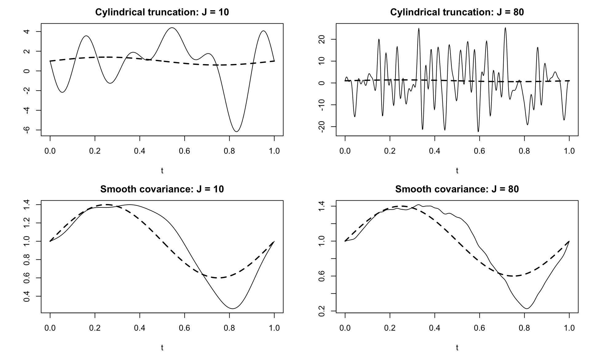
In the cylindrical model, increasing the truncation level adds fluctuations of undiminished size. In the smooth model, the new directions have very small coefficients, so the approximations stabilize.
4.4 Estimating the mean in the two Gaussian models
For \(N\) independent observations, the sample mean is
\[ \overline X_N(t) = \frac{1}{N}\sum_{i=1}^N X_i(t). \]
4.4.1 Cylindrical model
For the \(J\)-direction cylindrical truncation,
\[ \overline X_N^{(J)}(t)-\mu(t) = \sum_{k=1}^J \left( \frac{1}{N}\sum_{i=1}^N Z_{ik} \right)e_k(t). \]
Each averaged coefficient has variance \(1/N\). Hence
\[ \mathbb E \left[ \|\overline X_N^{(J)}-\mu\|_{L^2}^2 \right] = \frac{J}{N}. \]
Mean estimation is consistent only along sequences for which
\[ \frac{J}{N}\longrightarrow0. \]
This is the familiar high-dimensional phenomenon: every additional direction introduces a new parameter with the same noise level.
4.4.2 Smooth functional model
For the smooth model,
\[ \overline X_N(t)-\mu(t) = \sum_{k=1}^{\infty} \sqrt{\lambda_k} \left( \frac{1}{N}\sum_{i=1}^N Z_{ik} \right)e_k(t), \]
and therefore
\[ \mathbb E \left[ \|\overline X_N-\mu\|_{L^2}^2 \right] = \frac{1}{N}\sum_{k=1}^{\infty}\lambda_k. \]
Because the total variation is finite,
\[ \mathbb E \left[ \|\overline X_N-\mu\|_{L^2}^2 \right] = \frac{\operatorname{tr}(K)}{N} \longrightarrow0. \]
The notation \(\operatorname{tr}(K)\) simply means the total variance
\[ \operatorname{tr}(K) = \sum_{k=1}^{\infty}\lambda_k = \int_0^1 K(t,t)\,dt. \]
No condition involving the observation-grid size \(J\) appears. Once the data-generating distribution is a genuine random function with finite total variance, the sample mean converges in function norm at the usual \(N^{-1/2}\) rate.
N <- 50
J_seq <- 1:100
risk_cylindrical <- J_seq / N
risk_smooth <- cumsum(1 / J_seq^4) / N
plot(
J_seq,
risk_cylindrical,
type = "l",
lwd = 2,
xlab = "Number of included directions J",
ylab = "Expected squared L2 error",
ylim = range(c(risk_cylindrical, risk_smooth)),
main = "Risk of the sample mean"
)
lines(J_seq, risk_smooth, lwd=2, lty=2)
legend(
"topleft",
lty = c(1,2),
lwd = 2,
legend = c(
"Cylindrical N(mu, I): J/N",
"Smooth N(mu, K): sum(lambda_k)/N"
),
bty = "n"
)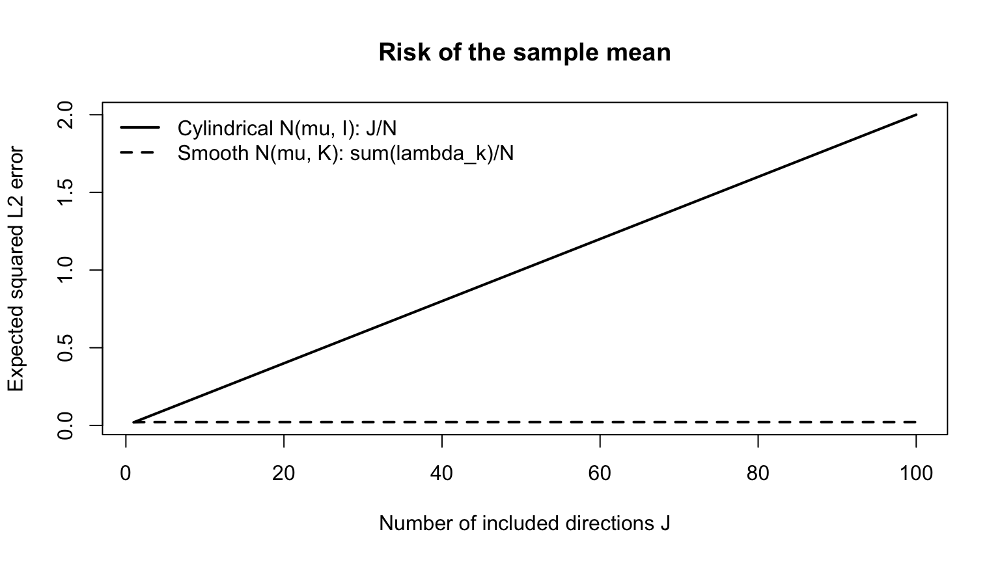
If we observe independent noise at \(J\) grid points and evaluate the mean using
\[ \frac{1}{J}\sum_{j=1}^J \{\overline Y(t_j)-\mu(t_j)\}^2, \]
the expected error can remain of order \(1/N\). This does not turn white noise into a random function. It only shows that an average loss over grid cells is different from an unscaled Euclidean loss.
The cylindrical problem reappears when we ask whether the observations themselves converge to an \(L^2\) object, whether individual curves can be reconstructed, or whether the infinitely many random directions have finite total variance. They do not.
4.5 Why functional high dimensionality is often manageable
FDA is not a claim that dimension never matters. It is a way of exploiting structure that is absent from an unrestricted high-dimensional vector.
4.5.1 1. Neighboring coordinates are linked
For a functional observation, \(X(t_j)\) and \(X(t_{j+1})\) refer to nearby locations on the same curve. Smoothness or continuity makes them informative about one another.
For an unrestricted vector,
\[ (X_1,\ldots,X_J), \]
coordinate \(j+1\) need not have any special relation to coordinate \(j\). Increasing \(J\) then means adding genuinely new variables.
4.5.2 2. There is a finite variance budget
A square-integrable random curve satisfies
\[ \mathbb E\|X-\mu\|_{L^2}^2 = \int_a^b \operatorname{Var}\{X(t)\}\,dt < \infty. \]
In the principal-component representation, this is equivalent to
\[ \sum_{k=1}^{\infty}\lambda_k<\infty. \]
The infinitely many directions must therefore share a finite amount of total variation. Their variances cannot all remain large. This automatically creates eigenvalue decay.
By contrast, cylindrical \(N(\mu,I)\) assigns variance one to every direction. It has no finite variance budget and no ordinary functional realization.
4.5.3 3. Smoothness shrinks rough directions
A common estimator solves
\[ \widehat g_\lambda = \arg\min_g \left\{ \sum_{j=1}^J \{Y(t_j)-g(t_j)\}^2 + \lambda \int_a^b \{g''(t)\}^2\,dt \right\}. \]
The first term rewards fit. The second penalizes excessive curvature.
- A small \(\lambda\) allows a flexible, possibly noisy curve.
- A large \(\lambda\) retains only smooth shapes.
This is regularization. The estimator is not allowed to spend equal flexibility on all \(J\) directions. Highly oscillatory directions are shrunk most strongly.
For fixed \(\lambda\), the fitted grid values can be written as
\[ \widehat{\boldsymbol g} = S_\lambda\boldsymbol Y, \]
where \(S_\lambda\) is a smoothing matrix. Its trace,
\[ \operatorname{df}_{\mathrm{eff}}(\lambda) = \operatorname{tr}(S_\lambda), \]
is called the effective degrees of freedom. A curve recorded at \(J=500\) locations may use only 10 or 15 effective degrees of freedom after smoothing.
4.5.4 4. Basis expansions express the same idea
We may write
\[ X_i(t) \approx \sum_{m=1}^{M} c_{im}B_m(t), \]
where \(B_1,\ldots,B_M\) are smooth basis functions.
Typically,
\[ M\ll J. \]
This does not assert that the true curve literally has only \(M\) dimensions. It says that, at the resolution supported by the data, a moderate number of smooth building blocks captures the relevant variation.
A basis restriction and a roughness penalty are two versions of the same principle:
- the basis restricts the admissible shapes;
- the penalty continuously shrinks implausibly rough shapes.
4.5.6 6. Grid density and sample size play different roles
A dense grid cannot create new independent curves.
\[ J: \quad \text{how accurately can each curve be observed or reconstructed?} \]
\[ N: \quad \text{how accurately can population quantities be learned?} \]
Observing ten people at 10,000 ages is not equivalent to observing 10,000 people. Smoothness can make large \(J\) manageable and beneficial, but uncertainty about the population still depends primarily on \(N\).
FDA is best understood as structured high-dimensional statistics.
The raw vectors may be long, but the ordering of their coordinates, smoothness of the trajectories, smoothness of the covariance, and decay of principal-component variances provide regularization. If those structural assumptions are false, functional methods do not make the curse of dimensionality disappear.
4.6 Pre-processing using basis expansions
The first practical step is often to represent discretely observed curves through a basis:
\[ X_i(t) \approx \sum_{m=1}^{M}c_{im}B_m(t). \]
Common choices include:
- B-splines for non-periodic curves;
- Fourier functions for periodic curves;
- wavelets for localized features;
- data-adaptive principal-component functions.
4.6.1 B-spline basis functions
bspl_bf <- fda::create.bspline.basis(
rangeval = c(0,1),
norder = 3,
breaks = seq(0,1,length.out=7)
)
plot(
bspl_bf,
main = "B-spline Basis Functions",
xlab = "[a,b] = [0,1]"
)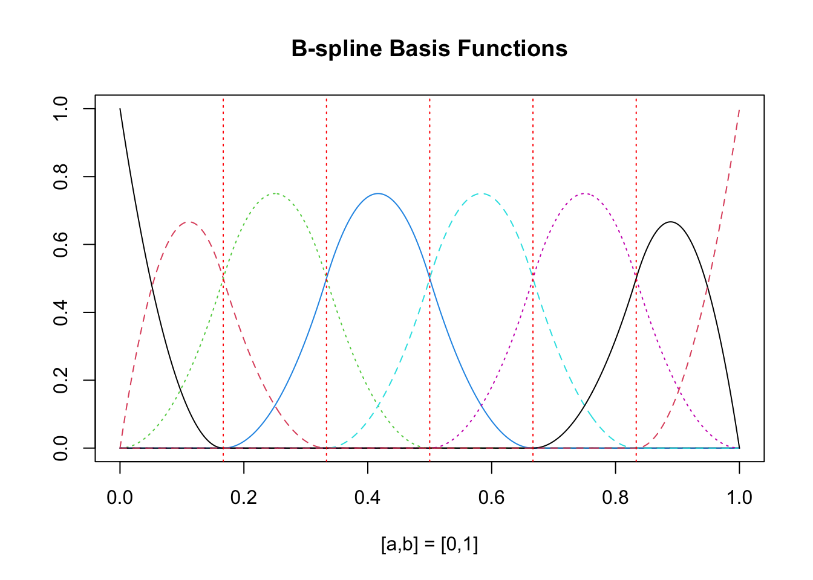
4.6.2 Fourier basis functions
fourier_bf <- fda::create.fourier.basis(
rangeval = c(0,1),
nbasis = 5
)
plot(
fourier_bf,
main = "Fourier Basis Functions",
xlab = "[a,b] = [0,1]"
)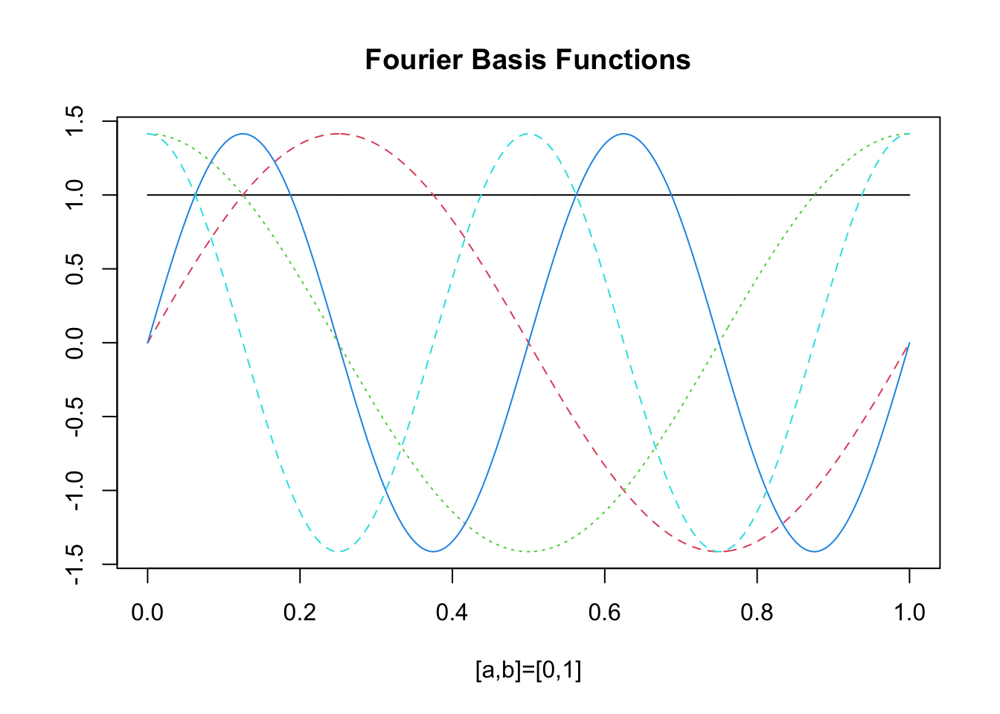
4.6.3 Berkeley growth curves
growth_five <- fda::smooth.basisPar(
argvals = growth$age,
y = growth$hgtf[, 1:5],
Lfdobj = 2,
lambda = 0.1
)
plot(
growth_five$fd,
xlab = "Age (years)",
ylab = "Height (cm)",
cex.lab = 1.2,
main = "Five Girls in the Berkeley Growth Study",
lty = 1
)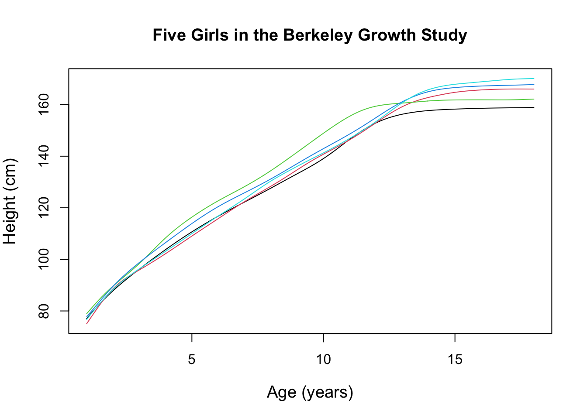
[1] "done"The roughness penalty uses the second derivative. It therefore discourages curves that bend excessively between nearby ages.
4.6.4 First derivative: growth velocity
plot(
fda::deriv.fd(growth_five$fd, 1),
xlab = "Age (years)",
ylab = "Growth velocity (cm/year)",
cex.lab = 1.2,
main = "Estimated Growth Velocities",
lty = 1
)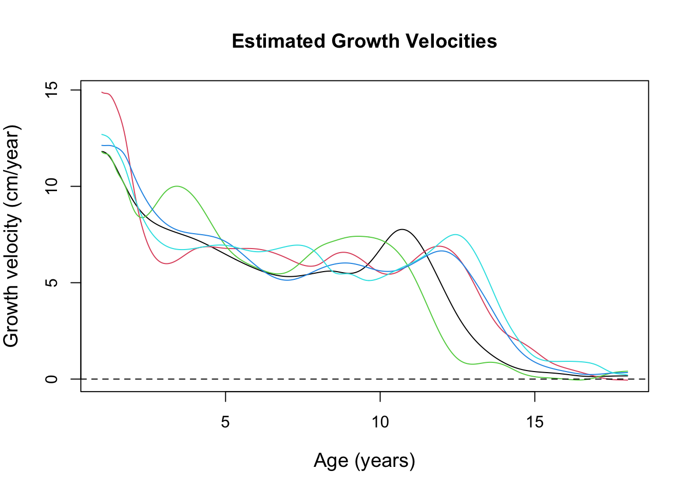
[1] "done"The derivative reveals features that are less visible in the height curves, most importantly the adolescent growth spurt.
4.6.5 Second derivative: growth acceleration
plot(
fda::deriv.fd(growth_five$fd, 2),
xlab = "Age (years)",
ylab = "Growth acceleration (cm/year²)",
cex.lab = 1.2,
main = "Estimated Growth Accelerations",
lty = 1
)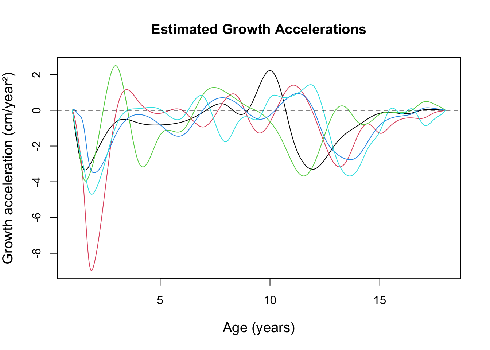
[1] "done"4.7 Functional mean and covariance
For a random curve \(X\), the population mean is
\[ \mu(t)=\mathbb E\{X(t)\}. \]
Its sample analogue is the pointwise mean
\[ \overline X_N(t) = \frac{1}{N}\sum_{i=1}^N X_i(t). \]
The pointwise standard deviation is
\[ S_N(t) = \sqrt{ \frac{1}{N-1} \sum_{i=1}^N \{X_i(t)-\overline X_N(t)\}^2 }. \]
The covariance function is estimated by
\[ \widehat c_N(s,t) = \frac{1}{N-1} \sum_{i=1}^N \{X_i(s)-\overline X_N(s)\} \{X_i(t)-\overline X_N(t)\}. \]
Its interpretation is the same as that of an ordinary covariance matrix:
- positive \(\widehat c_N(s,t)\): curves above their mean at \(s\) tend also to be above their mean at \(t\);
- negative \(\widehat c_N(s,t)\): curves above their mean at \(s\) tend to be below their mean at \(t\);
- large diagonal value \(\widehat c_N(t,t)\): substantial variation across curves at location \(t\).
4.7.1 Smooth Gaussian example
The following simulation uses the smooth covariance model introduced above.
set.seed(109)
N <- 50
J <- 200
K_terms <- 60
t_grid <- seq(0, 1, length.out=J)
mu_grid <- 1 + 0.6 * t_grid + 0.35 * sin(2*pi*t_grid)
basis_matrix <- sapply(
1:K_terms,
function(k) sqrt(2) * sin(k*pi*t_grid)
)
lambda <- 0.7 / (1:K_terms)^4
scores <- matrix(
rnorm(N*K_terms),
nrow=N,
ncol=K_terms
)
smooth_curves <- sweep(
scores %*% diag(sqrt(lambda)) %*% t(basis_matrix),
MARGIN=2,
STATS=mu_grid,
FUN="+"
)
smooth_mean <- colMeans(smooth_curves)
smooth_sd <- apply(smooth_curves, 2, sd)
smooth_cov <- cov(smooth_curves)
op <- par(mfrow=c(1,2), mar=c(4.2, 4.2, 2.5, 1.2))
matplot(
t_grid,
t(smooth_curves),
type="l",
lty=1,
col=gray(0.75),
xlab="t",
ylab="X(t)",
main="Smooth Gaussian Curves"
)
lines(t_grid, smooth_mean, lwd=2)
lines(t_grid, smooth_mean + smooth_sd, lwd=2, lty=2)
lines(t_grid, smooth_mean - smooth_sd, lwd=2, lty=2)
legend(
"topleft",
lty=c(1,2),
lwd=2,
legend=c("Sample mean", "Mean ± pointwise SD"),
bty="n"
)
selected <- seq(1, J, length.out=40)
persp(
x=t_grid[selected],
y=t_grid[selected],
z=smooth_cov[selected, selected],
xlab="s",
ylab="t",
zlab="",
main="Sample Covariance Function",
theta=-40,
phi=20,
expand=0.75,
shade=0.7
)
par(op)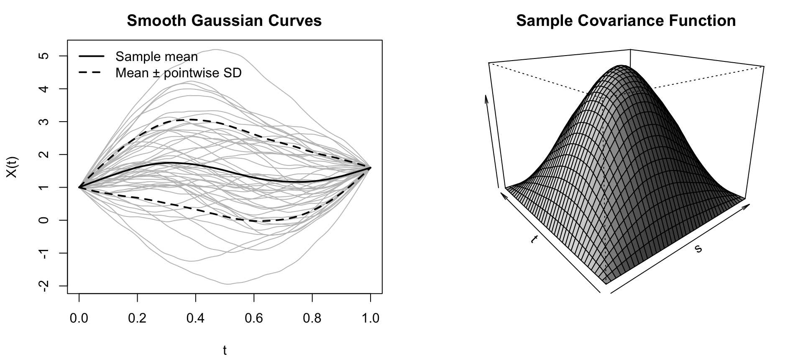
The covariance surface is smooth because it is generated by a small amount of variation in low-frequency directions and progressively less variation in high-frequency directions.
4.8 Functional principal component analysis
4.8.1 From covariance to modes of variation
Functional principal component analysis (FPCA) finds directions \(v_k(t)\) satisfying
\[ \int_a^b c(s,t)v_k(s)\,ds = \lambda_k v_k(t). \]
This equation is the functional analogue of
\[ \Sigma\boldsymbol v_k = \lambda_k\boldsymbol v_k \]
in ordinary PCA.
The covariance function can be represented as
\[ c(s,t) = \sum_{k=1}^{\infty} \lambda_k v_k(s)v_k(t), \]
and approximated by
\[ c(s,t) \approx \sum_{k=1}^{p} \lambda_k v_k(s)v_k(t). \]
The eigenvalues are ordered as
\[ \lambda_1\geq\lambda_2\geq\cdots\geq0. \]
The eigenfunctions are orthonormal:
\[ \int_a^b v_j(t)v_k(t)\,dt = \begin{cases} 1,&j=k,\\ 0,&j\neq k. \end{cases} \]
4.8.2 Scores and reconstruction
Each centered curve has the expansion
\[ X_i(t)-\mu(t) = \sum_{k=1}^{\infty} \xi_{ik}v_k(t), \]
where
\[ \xi_{ik} = \int_a^b \{X_i(t)-\mu(t)\}v_k(t)\,dt. \]
The score \(\xi_{ik}\) tells us how strongly curve \(i\) exhibits mode \(k\).
A \(p\)-component approximation is
\[ X_i(t) \approx \mu(t) + \sum_{k=1}^{p} \xi_{ik}v_k(t). \]
For sample quantities,
\[ \widehat\xi_{ik} = \int_a^b \{X_i(t)-\overline X_N(t)\} \widehat v_k(t)\,dt. \]
The estimated scores satisfy approximately
\[ \frac{1}{N}\sum_{i=1}^N\widehat\xi_{ik}=0, \qquad \frac{1}{N}\sum_{i=1}^N\widehat\xi_{ik}^2 = \widehat\lambda_k. \]
4.8.3 Why FPCA is a regularizer
FPCA is more than a plotting technique. It replaces the many original grid values with a small number of scores,
\[ (\widehat\xi_{i1},\ldots,\widehat\xi_{ip}). \]
The approximation keeps the directions in which curves actually vary and discards directions with little estimated variation.
For smooth covariance functions, the eigenvalues tend to decrease. Therefore, a moderate \(p\) can explain a large proportion of the total variation:
\[ \frac{\sum_{k=1}^{p}\widehat\lambda_k} {\sum_{k\geq1}\widehat\lambda_k}. \]
This is an effective dimension, not necessarily an exact finite dimension. A process may have infinitely many nonzero components while only a few are statistically visible at the available sample size.
4.8.4 Best-basis property
Among all orthonormal sets of \(p\) functions, the first \(p\) principal components minimize the expected squared reconstruction error:
\[ \mathbb E \left[ \left\| X-\mu-\sum_{k=1}^p\xi_kv_k \right\|_{L^2}^2 \right] = \sum_{k>p}\lambda_k. \]
Thus, FPCA uses the best \(p\)-dimensional linear approximation for the particular population of curves.
If \(v_k\) is an eigenfunction, then \(-v_k\) is the same eigenfunction for statistical purposes. Scores change sign at the same time. Interpretations should therefore not be based on whether the plotted eigenfunction happens to be positive or negative.
4.9 FPCA application 1: human growth
The Berkeley growth dataset contains heights of 39 boys and 54 girls measured at 31 unequally spaced ages from 1 to 18. We use the girls’ curves for the illustration.
The following helper displays two complementary views of each functional principal component:
- the estimated principal component function, or eigenfunction, (_k(t));
- the corresponding mode of variation, [ (t)c_k(t),] where (c) is a chosen standard-deviation multiplier.
growth_basis <- create.bspline.basis(
rangeval=range(growth$age),
nbasis=25,
norder=4
)
growth_smooth <- smooth.basisPar(
argvals=growth$age,
y=growth$hgtf,
fdobj=growth_basis,
Lfdobj=2,
lambda=0.1
)
growth_pca <- pca.fd(
growth_smooth$fd,
nharm=3,
centerfns=TRUE
)
age_grid <- seq(
min(growth$age),
max(growth$age),
length.out=200
)
plot_fpca_functions_and_modes(
pca_object=growth_pca,
eval_grid=age_grid,
ncomp=3,
multiplier=2,
xlab="Age (years)",
function_ylab="FPC function",
mode_ylab="Height (cm)",
component_names=c(
"FPC 1",
"FPC 2",
"FPC 3"
)
)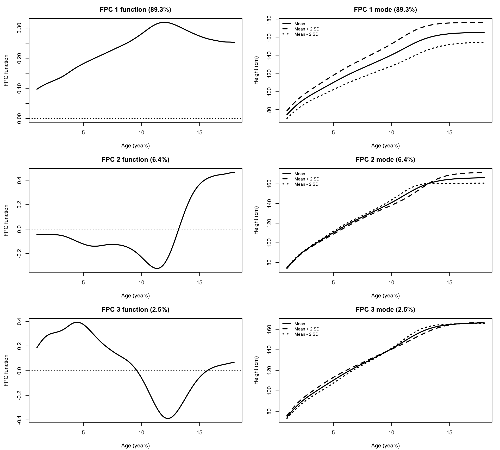
4.9.1 Interpretation
The panels provide two related ways of interpreting each component. The FPC function in the left panel shows how strongly different ages contribute to the component. The mean-plus/minus curves in the right panel translate that function back into the original units of height, making its substantive effect easier to interpret.
The first component is usually dominated by a common vertical displacement of the height curve. Children with a large score in one direction tend to be taller than average over much of the age range, while children with a score in the opposite direction tend to be shorter. It is therefore an overall size component.
The second component typically changes its effect over age. It distinguishes children who are relatively tall earlier but gain less height later from children who are relatively shorter earlier but catch up later. This is related to the timing and tempo of maturation.
The third component often describes a more localized deviation around adolescence and captures features of the pubertal growth spurt that are not explained by overall size or a simple early-versus-late contrast.
The signs of the FPC functions are arbitrary. Multiplying an FPC function and all its scores by (-1) produces an equivalent FPCA solution. Interpretation should therefore focus on the contrast between the two perturbation curves rather than on whether a particular direction is labeled positive or negative.
4.9.2 Scores turn curves into interpretable variables
plot(
growth_pca$scores[, 1],
growth_pca$scores[, 2],
pch=19,
xlab="FPC 1 score: overall size",
ylab="FPC 2 score: maturation pattern",
main="Growth-Curve Scores"
)
abline(
h=0,
v=0,
lty=3
)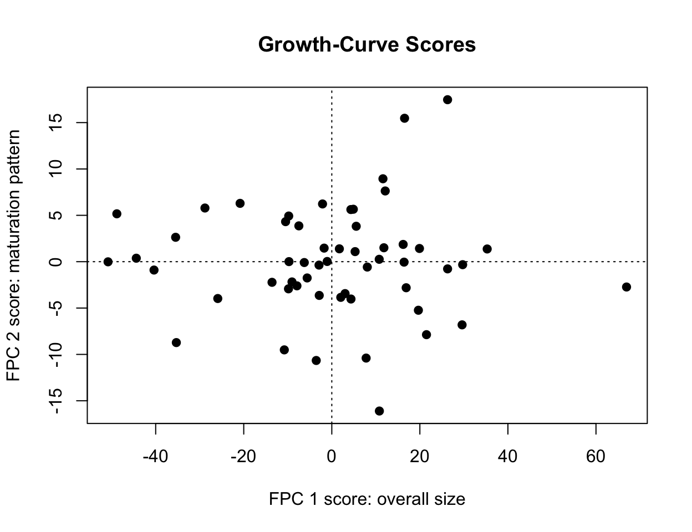
The score plot gives each child a low-dimensional summary. These scores can subsequently be used in regression, clustering, or classification. For example, one could study whether maturation scores are associated with later health outcomes.
4.9.3 FPCA of growth velocities
For growth research, the derivative is often more informative than height itself. The derivative of a fitted height curve estimates the child’s instantaneous growth velocity.
growth_velocity_fd <- deriv.fd(
growth_smooth$fd,
1
)
growth_velocity_pca <- pca.fd(
growth_velocity_fd,
nharm=2,
centerfns=TRUE
)
plot_fpca_functions_and_modes(
pca_object=growth_velocity_pca,
eval_grid=age_grid,
ncomp=2,
multiplier=2,
xlab="Age (years)",
function_ylab="Velocity FPC function",
mode_ylab="Growth velocity (cm/year)",
component_names=c(
"Velocity FPC 1",
"Velocity FPC 2"
)
)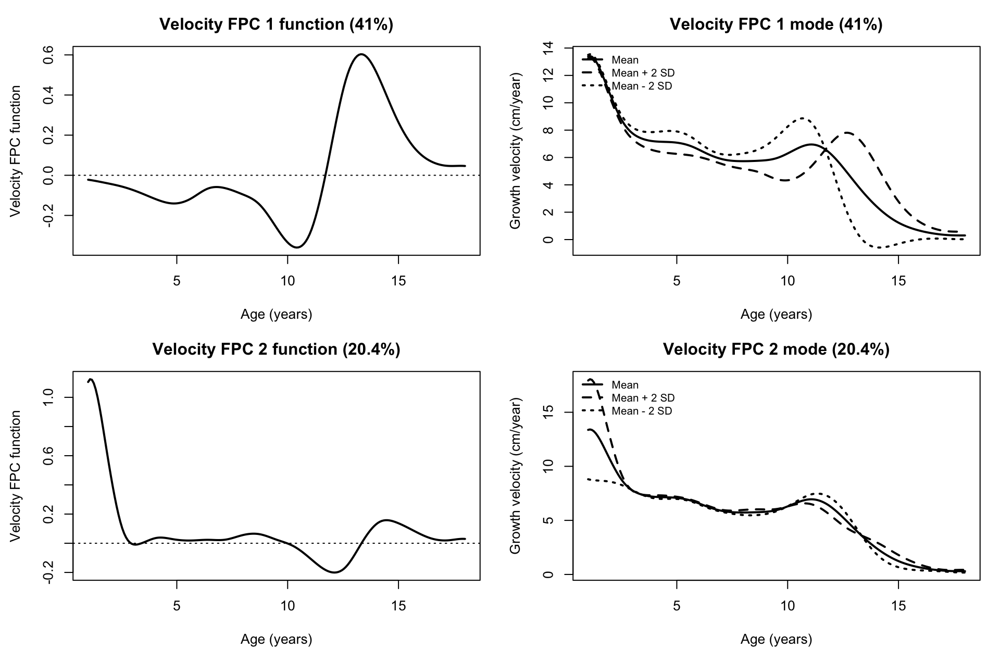
For velocity curves, one component commonly captures the intensity of the adolescent growth spurt. Its perturbation curves differ primarily in the height of the velocity peak.
The second component in this analysis is concentrated near the beginning of the observed age range. Its loading function is largest at the youngest ages and then decays rapidly toward zero. It should therefore be interpreted primarily as an early-childhood growth-speed component. Children with scores in one direction have a higher estimated growth velocity at young ages, whereas children with scores in the opposite direction have a lower early growth velocity. Because the loading function is close to zero at later ages, this component has comparatively little effect on adolescent growth.
The precise ordering and signs of these components depend on the fitted data. The displayed FPC functions identify the ages at which the velocity curves vary, while the perturbation curves show whether that variation changes the magnitude, timing, or shape of the growth spurt.
This illustrates an important advantage of functional data analysis: scientifically meaningful features can be extracted from derivatives of smooth curves rather than only from the original measurements.
4.10 FPCA application 2: Canadian temperature curves
The CanadianWeather data contain average daily temperature and precipitation curves for 35 Canadian weather stations, based on observations from 1960 to 1994. Here, each station is one functional observation and the argument (t) is day of the year.
A Fourier basis is natural because annual temperature is periodic.
temperature <- CanadianWeather$dailyAv[
,
,
"Temperature.C"
]
day_grid <- seq(
0.5,
364.5,
by=1
)
weather_basis <- create.fourier.basis(
rangeval=c(0, 365),
nbasis=65,
period=365
)
harmonic_acceleration <- vec2Lfd(
c(
0,
(2 * pi / 365)^2,
0
),
c(0, 365)
)
weather_smooth <- smooth.basisPar(
argvals=day_grid,
y=temperature,
fdobj=weather_basis,
Lfdobj=harmonic_acceleration,
lambda=1e5
)
plot(
weather_smooth$fd,
xlab="Day of year",
ylab="Average temperature (°C)",
main="Canadian Annual Temperature Curves",
lty=1
)[1] "done"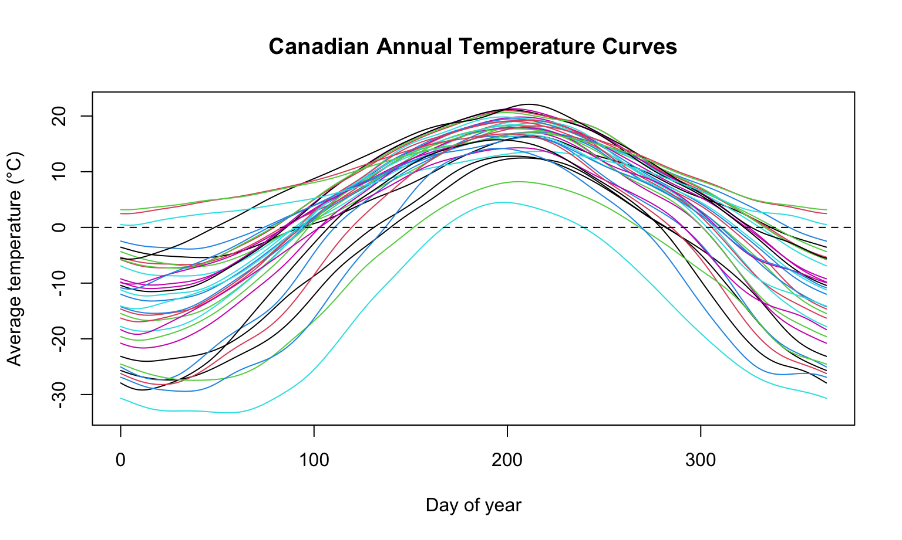
We also regularize the principal-component functions so that the estimated modes remain smooth.
weather_harmonic_par <- fdPar(
fd(
matrix(
0,
weather_basis$nbasis,
1
),
weather_basis
),
harmonic_acceleration,
lambda=1e5
)
weather_pca <- pca.fd(
weather_smooth$fd,
nharm=3,
harmfdPar=weather_harmonic_par,
centerfns=TRUE
)
plot_fpca_functions_and_modes(
pca_object=weather_pca,
eval_grid=day_grid,
ncomp=3,
multiplier=2,
xlab="Day of year",
function_ylab="Temperature FPC function",
mode_ylab="Average temperature (°C)",
component_names=c(
"Temperature FPC 1",
"Temperature FPC 2",
"Temperature FPC 3"
)
)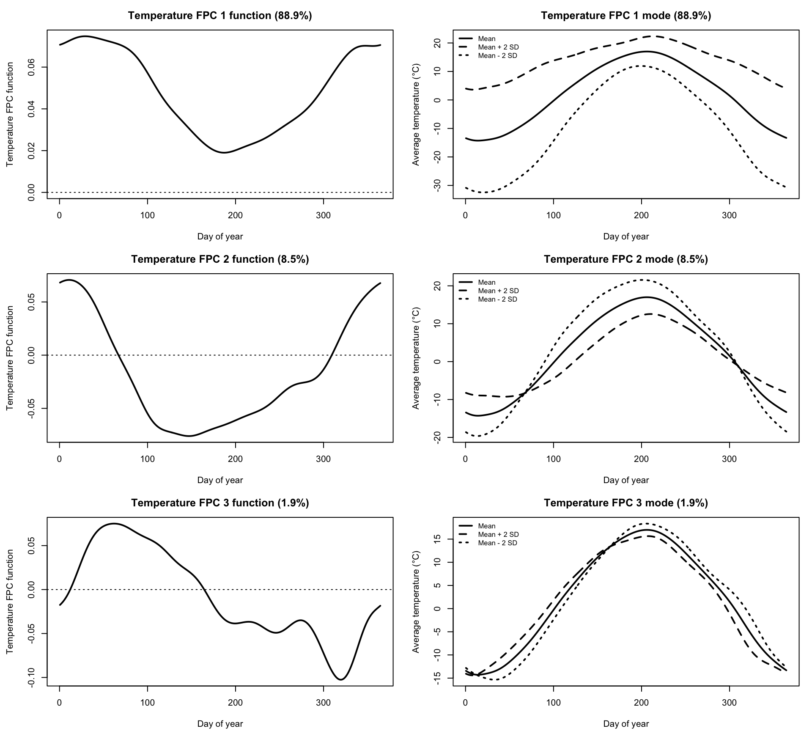
4.10.1 Interpretation
The FPC functions in the left column show the parts of the year that contribute most strongly to each component. Values close to zero indicate times of the year that contribute relatively little to the corresponding score. Sign changes indicate contrasts between different parts of the year.
The perturbation curves in the right column express the same components in degrees Celsius and are therefore generally easier to interpret scientifically.
The first component generally acts as an overall temperature-level component. Stations at one end of the score distribution are warmer over most of the year, while stations at the other end are colder. This component is strongly related to broad geographic differences such as latitude.
The second component commonly describes the amplitude of the seasonal cycle. A score in one direction corresponds to a more continental climate, with colder winters relative to summers and a larger annual temperature range. A score in the other direction corresponds to a more maritime climate, where seasonal temperature differences are moderated by the ocean.
The third component often adjusts the shape or timing of the seasons. For example, it may describe differences in the speed of spring warming and autumn cooling or an asymmetry between the first and second halves of the year.
As in the growth example, the signs of the temperature FPC functions are arbitrary. Reversing the sign of a function merely exchanges the displayed plus and minus perturbation curves.
4.10.2 Scores reveal geographic structure
weather_region <- factor(
CanadianWeather$region
)
region_number <- as.integer(
weather_region
)
plot(
weather_pca$scores[, 1],
weather_pca$scores[, 2],
pch=19,
col=region_number,
xlab="FPC 1 score: annual temperature level",
ylab="FPC 2 score: seasonal amplitude",
main="Canadian Temperature Scores"
)
abline(
h=0,
v=0,
lty=3
)
legend(
"topright",
legend=levels(weather_region),
col=seq_along(levels(weather_region)),
pch=19,
bty="n"
)
extreme_stations <- unique(
c(
which.min(weather_pca$scores[, 1]),
which.max(weather_pca$scores[, 1]),
which.min(weather_pca$scores[, 2]),
which.max(weather_pca$scores[, 2])
)
)
text(
weather_pca$scores[extreme_stations, 1],
weather_pca$scores[extreme_stations, 2],
labels=CanadianWeather$place[extreme_stations],
pos=3,
cex=0.75
)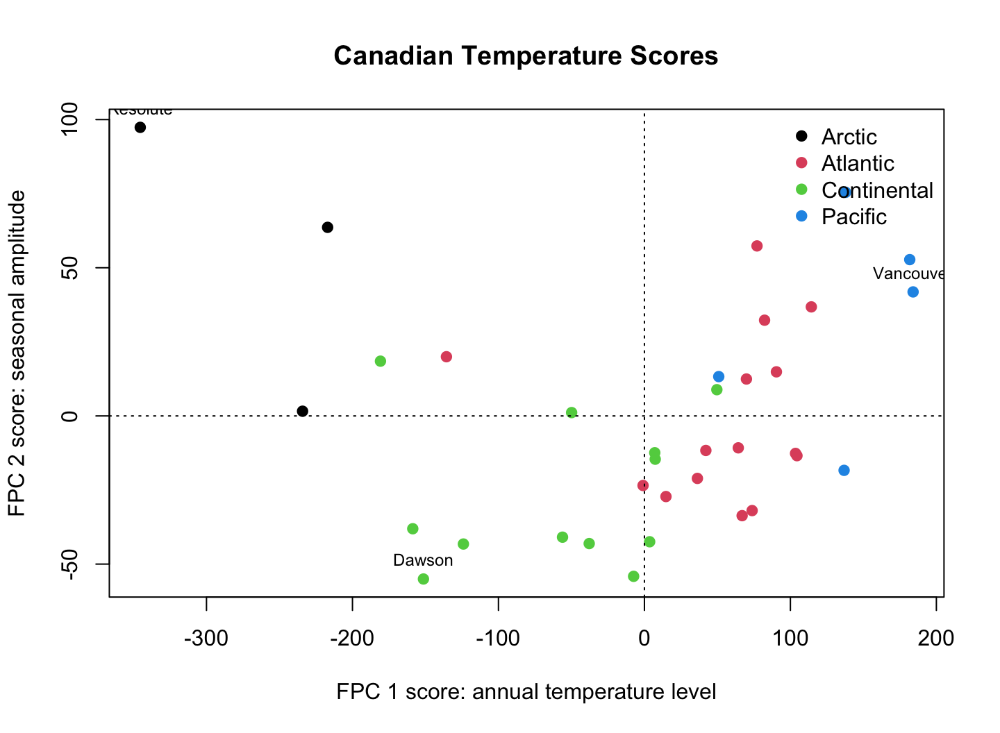
This plot shows why FPCA is useful rather than merely technical. Hundreds of daily temperature values per station are reduced to a few economically and scientifically meaningful features: average climate level, seasonal amplitude, seasonal timing and asymmetry.
The scores can be related to geography, energy demand, agricultural outcomes, or infrastructure requirements.